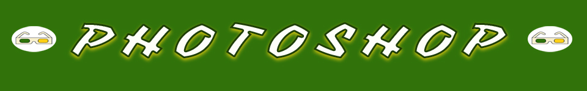
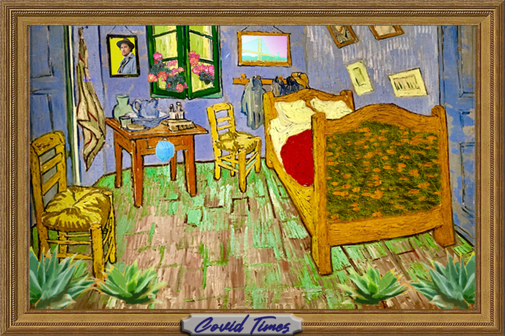

Home
Photoshop
Illustrator
Animate
Indesign
Contact

For my Photoshop project I went back through my iphoto library and found a bunch of photos from my
travels that helped ease the pain of
being stuck inside for most of the spring when I would normally be traveling.
I took photos from San Francisco, Chicago, France and Ecuador and created a collage using Van Gough as a backdrop to showcase them and to try and create a sense having them around, even though they were far away.